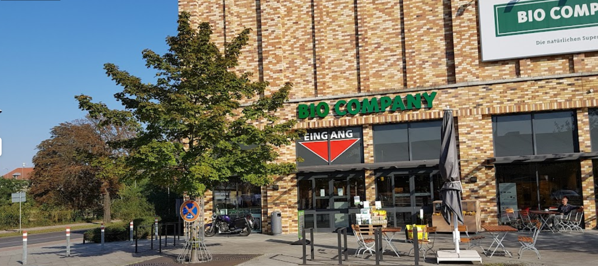

Ruta de 7 dies
1r dia
Agafarem un avio a
Alemania al
Aeroport de Berlín.
Quan ateritzem
anirem al hostal
NEOHOSTEL Berlín
a descansar del viatje.
2n dia
Surtirem del hostal
i anirem al Biesdorf-Center 
per fer algunes compres de menja y ropa etc.
3r dia
Anirem al Museo de Historia Natural de Berlín allà veurem exposicions de dinosaures de la terra del sistema el sistema solar etc. Exposicions que hi haurà.
4t dia
Anirem al Museo de Pérgamo allà veurem cuadres de les persones mes importants. Exposicions que hi ha.
5è dia
Anirem al Puerta de Brandeburgo.
Porta i monument del segle XVIII amb 12 columnes dòriques i rematada amb una escultura clàssica de deessa.
6è dia
Anirem al Edificio del Reichstag.
Edificio neorrenacentista con una cúpula de cristal diseñada por Norman Foster con vistas a la ciudad.
7è dia
Deixarem el hotel per anar al Aeroport per tornar a casa.